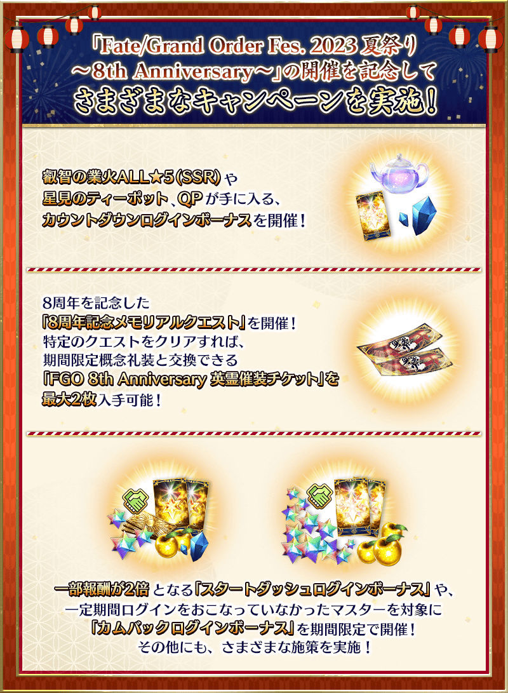
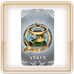
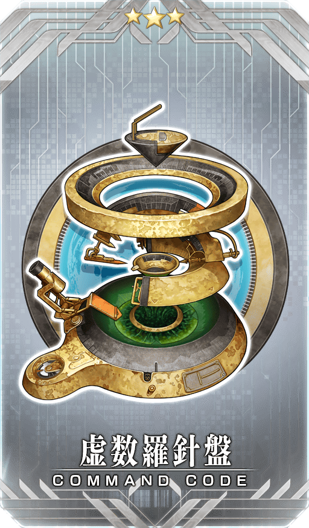
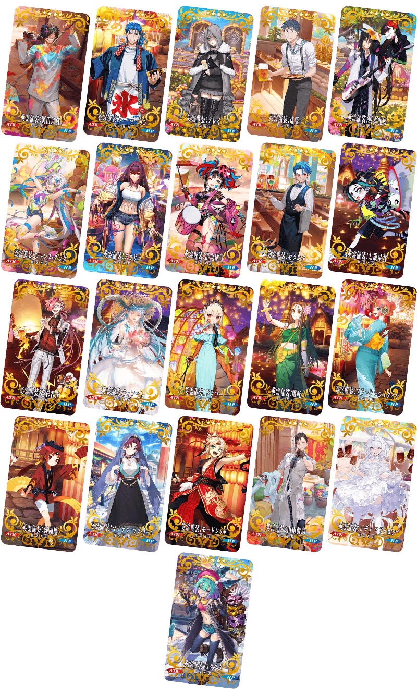
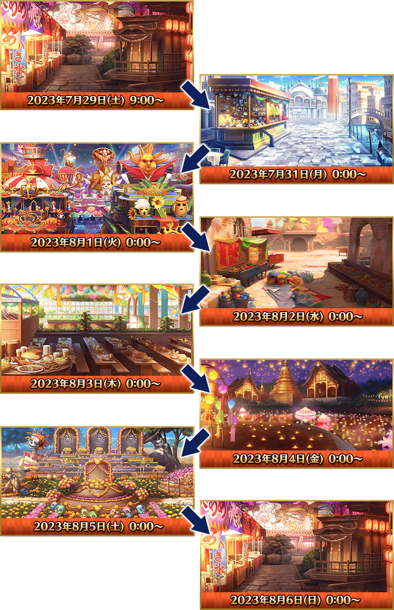

◆公告的主要追記・更新履歴◆
【7月28日(五) 17:00追記】
■8周年記念最大傷害試驗關卡在迦勒底之門登場！
【7月29日(六) 8:00追記】
■能交換的「英靈催裝」一覧
■個人空間以期間限定變成夏日祭典樣式！
【7月30日(日) 14:00追記】
■短篇動畫「搞不懂的藤丸立香」最終話記念概念禮裝贈送！
【7月30日(日) 17:00追記】
■8周年記念回憶關卡更新！
■8周年記念指令紋章情報公開！
為了記念「Fate/Grand Order Fes. 2023 夏日祭典 ～8th Anniversary～」的舉辦，舉辦『「Fate/Grand Order Fes. 2023 夏日祭典 ～8th Anniversary～」舉辦前夕宣傳活動』！

◆舉辦期間◆
2023年7月21日(五) 17:00～8月9日(三) 11:59
※在2018年12月31日(二) 22:00以後新配信的主線故事及期間限定活動、一部份關卡、宣傳活動及召喚中，會顯示隱藏真名的對象從者真名。
※本頁面皆為開發中圖片。會有與實際圖片相異的情況。
在「Fate/Grand Order Fes. 2023 夏日祭典 ～8th Anniversary～」舉辦前夕宣傳活動的舉辦期間中預定實施維修。
維修中無法遊玩遊戲及進行召喚，敬請見諒。
關於維修的詳情會在日後再次報告。
【7月30日(日) 17:00追記】
【「Fate/Grand Order Fes. 2023 夏日祭典 ～8th Anniversary～」舉辦記念特別宣傳活動】
■「Fate/Grand Order Fes. 2023 夏日祭典 ～8th Anniversary～」舉辦前夕倒數登入獎勵舉辦！
■8周年記念回憶關卡更新！
■能交換的「英靈催裝」一覧
■個人空間以期間限定變成夏日祭典樣式！
■8周年記念指令紋章
■短篇動畫「搞不懂的藤丸立香」最終話記念概念禮裝贈送！
■8周年記念最大傷害試驗關卡在迦勒底之門登場！
【從現在剛開始＆經過很久才遊玩】 ■起跑衝刺宣傳活動登入獎勵的一部份報酬以期間限定2倍！ ■期間限定的回歸登入獎勵！
為了記念「Fate/Grand Order Fes. 2023 夏日祭典 ～8th Anniversary～」舉辦，實施特別的登入獎勵。
在下述期間中8天內登入的話，贈送睿智的業火ALL★5(SSR)30張、800萬QP、占星茶壺3個！
◆舉辦期間◆
2023年7月22日(六) 3:00～7月30日(日) 2:59
※無論登入的次數，對應登入的時間領取禮物。
◆「占星茶壺」使用期限◆
2023年7月29日(六) 3:00～8月31日(四) 22:59
※「占星茶壺」有使用期限，超過使用期限「占星茶壺」會消失，敬請注意。
※請注意「2800萬DL突破宣傳活動」中獲得的「占星茶壺」使用期限到7月26日(三) 11:59結束。
◆贈送對象◆
通過「特異點F 炎上汙染都市 冬木」的御主對象
※在管理室(ターミナル)畫面的關卡橫幅必須要有「CLEAR」的文字顯示。
※各登入獎勵開始日的2:59前滿足條件後登入來領取禮物。
【「Fate/Grand Order Fes. 2023 夏日祭典 ～8th Anniversary～」舉辦前夕倒數登入獎勵】
| 登入時間 | 贈送內容 | |
|---|---|---|
| 7月22日(六) 3:00～7月23日(日) 2:59 |

|
睿智的業火ALL★5(SSR) 5張 |
| 7月23日(日) 3:00～7月24日(一) 2:59 |

|
200萬QP |
| 7月24日(一) 3:00～7月25日(二) 2:59 |
|
睿智的業火ALL★5(SSR) 10張 |
| 7月25日(二) 3:00～7月26日(三) 2:59 |
|
300萬QP |
| 7月26日(三) 3:00～7月27日(四) 2:59 |
|
睿智的業火ALL★5(SSR) 5張 |
| 7月27日(四) 3:00～7月28日(五) 2:59 |
|
300萬QP |
| 7月28日(五) 3:00～7月29日(六) 2:59 |
|
睿智的業火ALL★5(SSR) 10張 |
| 7月29日(六) 3:00～7月30日(日) 2:59 | 占星茶壺 3個 | |
※禮物只能各領取1次。 ※在每天3:00切換給予的道具內容。

為了記念8周年，舉辦收集從2016年～2022年舉辦的期間限定活動之中殘留印象的戰鬥「8周年記念回憶關卡」！
通過在迦勒底之門內出現「回憶關卡」，入手可交換1張喜愛期間限定概念禮裝「英靈催裝」的「FGO 8th Anniversary 英靈催裝券」等特別報酬吧！
「英靈催裝」是以各式各樣「祭典」為中心所描繪的44張期間限定概念禮裝！
通過特定回憶關卡的話各可入手1張「FGO 8th Anniversary 英靈催裝券」。最多能入手2張「英靈催裝」！
「回憶關卡」就算通過後也不會消失，可以變更從者和概念禮裝的組合等後無限次挑戰。 ※關卡通過報酬、戰利品、御主EXP、魔術禮裝EXP、絆點數只可在初次通過時獲得。
◆回憶關卡舉辦期間◆
2023年7月27日(四) 17:00～8月9日(三) 11:59
◆期間限定概念禮裝「英靈催裝」交換期間◆
2023年7月29日(六) 8:00～8月16日(三) 11:59
◆8周年回憶關卡一覧◆
【7月30日(日) 17:00更新】
| 開放時間 | 關卡名 | 開放條件 | 通過報酬 | |
|---|---|---|---|---|
| 2023年 7月27日(四) 17:00 |
2016年活動 回憶關卡 (第二代是Alter醬 ～2016聖誕節～) |
通過 特異點F 炎上汙染都市 冬木 | FGO 8th Anniversary 英靈催裝券 1張 |
|
| 2017年活動 回憶關卡 (Death Jail・夏日逃脫 ～罪與絕望的梅芙大監獄2017～) |
通過 特異點F 炎上汙染都市 冬木＆通過 2016年活動 回憶關卡 |

|
呼符 1張 | |
| 2023年 7月28日(五) 17:00 |
2018年活動 回憶關卡 (嘮嘮叨叨帝都聖杯奇譚) |
通過 特異點F 炎上汙染都市 冬木 |
|
呼符 1張 |
| 2019年活動 回憶關卡 (拜見！ 拉斯維加斯御前比試～泳裝劍豪七色決勝！) |
通過 特異點F 炎上汙染都市 冬木＆通過 2018年活動 回憶關卡 | FGO 8th Anniversary 英靈催裝券 1張 |
||
| 2023年 7月30日(日) 17:00 |
2020年活動 回憶關卡 (從者・夏令營！ ～迦勒底・驚悚之夜～) |
通過 特異點F 炎上汙染都市 冬木 |
|
呼符 1張 |
| 2021年活動 回憶關卡 (愛之傳教士埃莫醬的San Valentino！～迦勒底・苦澀・情人節2021～) |
通過 特異點F 炎上汙染都市 冬木＆通過 2020年活動 回憶關卡 |
|
呼符 1張 | |
| 2022年活動 回憶關卡 (水怪危機 無垢者們的浮島) |
通過 特異點F 炎上汙染都市 冬木＆通過 2021年活動 回憶關卡 |  | 指令紋章 ★3(R)虚数羅針盤 1張 |
|
※「FGO 8th Anniversary 英靈催裝券」可藉由點擊管理室(ターミナル)畫面右上的「活動報酬」鍵或在達文西工房內的「活動道具交換」點擊活動看板，交換活動道具。 ※藉由通過「回憶關卡」入手的「FGO 8th Anniversary 英靈催裝券」最多2張。
8周年記念指令紋章
【7月30日(日) 17:00更新】
|  |
★★★R |
期間限定概念禮裝「英靈催裝」
「英靈催裝」是全44張新繪製的期間限定概念禮裝。
期間限定概念禮裝「英靈催裝」有開放條件，會根據主線關卡的通過狀況增加交換對象種類。
請注意未通過對象章節的話無法交換。
※期間限定概念禮裝「英靈催裝」是以最大限界突破及最大等級的狀態交換。 ※全44張的期間限定概念禮裝「英靈催裝」性能皆相同。
|
★★★★SR |
【7月29日(六) 8:00更新】

| 開放條件 | 開放的「英靈催裝」 |
|---|---|
| 通過 特異點F 炎上汙染都市 冬木 |
英靈催裝:岡田以藏 英靈催裝:庫・夫林(Caster) 英靈催裝:格蕾 英靈催裝:齋藤一 英靈催裝:坂本龍馬(Lancer) 英靈催裝:貞德・Alter・聖誕・Lily 英靈催裝:斯卡薩哈(Assassin) 英靈催裝:清少納言(Berserker) 英靈催裝:瑟坦特 英靈催裝:太歲星君 英靈催裝:高杉晉作 英靈催裝:迪亞馬特 英靈催裝:德拉科 英靈催裝:哪吒 英靈催裝:弗蘭肯斯坦(Saber) 英靈催裝:紅閻魔 英靈催裝:瑪納諾・麥克・列 英靈催裝:莫德雷德(Saber) 英靈催裝:山南敬助 英靈催裝:阿瓦隆女士 英靈催裝:洛庫斯塔 |
| 開放條件 | 開放的「英靈催裝」 |
|---|---|
| 通過 亞種特異點Ⅲ 屍山血河舞台 下總國 英靈劍豪七番勝負 |
英靈催裝:巴御前(Archer) |
| 開放條件 | 開放的「英靈催裝」 |
|---|---|
| 通過 亞種特異點Ⅳ 禁忌降臨庭園 塞勒姆 異端的塞勒姆 |
英靈催裝:艾比蓋兒・威廉斯〔夏〕 英靈催裝:喀耳刻 |
| 開放條件 | 開放的「英靈催裝」 |
|---|---|
| 通過 Lostbelt No.3 人智統合真國 SIN |
英靈催裝:始皇帝 英靈催裝:蘭陵王 |
| 開放條件 | 開放的「英靈催裝」 |
|---|---|
| 通過 徳川廻天迷宮 大奥 | 英靈催裝:迦摩(Avenger) |
※7/29 16:30概念禮裝名修正。現在遊戲內的「達・文西工房」的「活動道具交換」中，確認概念禮裝名有誤的問題，預定日後修正。
※已在7/30 17:00修正問題。
| 開放條件 | 開放的「英靈催裝」 |
|---|---|
| 通過 Lostbelt No.4 創世滅亡輪廻 由伽・剎多羅 |
英靈催裝:阿斯克勒庇俄斯 |
| 開放條件 | 開放的「英靈催裝」 |
|---|---|
| 通過 虛數大海戰幻想急航 | 英靈催裝:楊貴妃 |
※想開放「英靈催裝:楊貴妃」，必須通過「虛數大海戰 幻想急航 ～上浮吧鸚鵡螺號～」(包含主線分支)的所有主線關卡。(7/30 17:00追記)

| 開放條件 | 開放的「英靈催裝」 |
|---|---|
| 通過 Lostbelt No.5 神代巨神海洋 亞特蘭提斯 |
英靈催裝:阿基里斯 |
| 開放條件 | 開放的「英靈催裝」 |
|---|---|
| 通過 地獄界曼荼羅 平安京 |
英靈催裝:蘆屋道滿 英靈催裝:伊吹童子(Berserker) 英靈催裝:平景清 |
| 開放條件 | 開放的「英靈催裝」 |
|---|---|
| 通過 非靈長生存圈 通古斯卡・聖域 |
英靈催裝:太公望 |
| 開放條件 | 開放的「英靈催裝」 |
|---|---|
| 通過 死想顯現界域 如夢似幻 |
英靈催裝:女教皇瓊安 英靈催裝:君士坦丁11世 英靈催裝:莎樂美 英靈催裝:查里曼 英靈催裝:徐福 |
| 開放條件 | 開放的「英靈催裝」 |
|---|---|
| 通過 Lostbelt No.7 黃金樹海紀行 冥界紀元 |
英靈催裝:埃列什基伽勒〔Alter〕 英靈催裝:庫庫爾坎 英靈催裝:特拉洛克 英靈催裝:尼托克里絲〔Alter〕 |
| 開放條件 | 開放的「英靈催裝」 |
|---|---|
| 通過 奏章Ⅰ 虛數羅針內界 平面之月 |
英靈催裝:怖軍 |
能交換可能的英靈催裝與開放條件
「英靈催裝」在達・文西工房的「活動道具交換」追加能交換的概念禮裝。 ※請注意未通過成為條件章節的話，就算到開放時間也無法交換。
◆概念禮裝交換期間◆
2023年7月29日(六) 8:00～8月16日(三) 11:59
【7月30日(日) 14:00追記】
為了記念於「Fate/Grand Order Fes. 2023 夏日祭典 ～8th Anniversary～」上映的短篇動畫「搞不懂的藤丸立香」迎來大結局，實施特別的登入獎勵。
在期間內的初次登入時贈送「搞不懂的藤丸立香」最終話記念概念禮裝！
◆舉辦期間◆
2023年7月30日(日) 14:00～8月7日(一) 2:59
◆領取條件◆
2023年8月6日(日) 2:59前通過「特異點F 炎上汙染都市 冬木」的御主對象
※上述時間前，在管理室管理室(ターミナル)畫面的關卡橫幅必須要有「CLEAR」的文字顯示。
◆登入獎勵內容◆
| 入手期間 | 領取條件 | 贈送內容 | |
|---|---|---|---|
| 2023年7月30日(日) 14:00～ 8月7日(一) 2:59 |
8月6日(日) 2:59前通過「特異點F 炎上汙染都市 冬木」 | ★4(SR)慰労会はおわらない 1張 | |
◆短篇動畫「搞不懂的藤丸立香」最終話記念概念禮裝◆
|
★★★★SR |
【7月28日(五) 17:00追記】
2023年7月29日(六)・30日(日)的2天內於幕張展覽館舉辦的「Fate/Grand Order Fes. 2023 夏日祭典 ～8th Anniversary～」。
於該會場進行的8周年記念妖精騎士杯最大傷害試行關卡，在遊戲內2天內限定配信！
8周年記念妖精騎士杯最大傷害試行關卡是記錄「隊伍在1回合中給予的傷害合計」的特殊關卡。
就算通過後也不會消失，可以變更從者和概念禮裝的組合等後無限次挑戰。
還有，本關卡只限編制自己持有的從者到隊伍。(無法使用支援的從者)
靠培育出的自豪從者挑戰自己的最高記錄吧！
【7月30日(日) 17:00追記】
2023年7月30日(日) 8:00～16:59舉辦的第2天「最大傷害試行關卡」中，發生未對做為敵從者登場的摩根設定〔七騎士從者〕的問題。關於此事由於會讓修正前與修正後的傷害試驗結果造成差異，因此不實施修正。
非常抱歉給各位帶來麻煩。
※8周年記念妖精騎士杯最大傷害試行關卡在迦勒底之門內配信。 ※合計傷害為各關卡分別統計，各「隊伍在1回合中給予的傷害合計」之中，取最高的記錄。 ※請注意8周年記念妖精騎士杯最大傷害試行關卡沒有關卡通過報酬等。 ※戰利品、御主EXP、魔術禮裝EXP、絆點數只可在初次通過時獲得。 ※本試行關卡中無法使用接關。 ※透過敗北及撤退結束戰鬥的情況，不會保存記錄。
◆舉辦期間◆
第1天:2023年7月29日(六) 8:00～16:59
第2天:2023年7月30日(日) 8:00～16:59
◆活動參加條件◆
滿足以下條件的御主才能參加
・通過「特異點F 炎上汙染都市 冬木」
【7月29日(六) 8:00追記】
為了記念「Fate/Grand Order ～8th Anniversary～」的舉辦、，個人空間(マイルーム)以期間限定變成夏日祭典樣式！
期間中的個人空間會逐日變更不同的背景，與中意的從者一起享受期間限定的個人空間模樣吧！
◆期間◆
2023年7月29日(六) 8:00～8月9日(三) 11:59
背景變更時間表


自2023年7月21日(五) 17:00，在起跑衝刺宣傳活動的登入獎勵，以期間限定追加特別獎勵！
下述期間中，第7天的獎勵變成2倍，增量到聖晶石召喚最多44次份的聖晶石60個與呼符20張、友情點數4,000pt、200萬QP、睿智的猛火ALL★4(SR)40張、黃金果實20個。
※聖晶石召喚最多44次份限在同一個聖晶石召喚進行的情況。
◆舉辦期間◆
2023年7月21日(五) 17:00～9月7日(四) 2:59
【起跑衝刺登入獎勵合計】 ・聖晶石225個與呼符45張(聖晶石召喚最多132次份) ※聖晶石召喚最多132次份限在同一個聖晶石召喚進行的情況。 ・黃金果實42個 ・睿智的猛火ALL★4(SR)300張 ・420萬QP ・友情點數30,000pt
◆起跑衝刺登入獎勵的內容◆
| 總登入天數 | 入手登入獎勵 |
|---|---|
| 第1天 |
聖晶石 2個 呼符 5張 友情點數 2,000pt 10萬QP 睿智的猛火ALL★4(SR) 20張 黃金果實 1個 |
| 第2天 |
聖晶石 3個 呼符 5張 友情點數 2,000pt 10萬QP 睿智的猛火ALL★4(SR) 20張 黃金果實 1個 |
| 第3天 |
聖晶石 5個 呼符 5張 友情點數 2,000pt 10萬QP 睿智的猛火ALL★4(SR) 20張 黃金果實 1個 |
| 第4天 |
聖晶石 7個 友情點數 2,000pt 10萬QP 睿智的猛火ALL★4(SR) 20張 黃金果實 1個 |
| 第5天 |
聖晶石 10個 友情點數 2,000pt 10萬QP 睿智的猛火ALL★4(SR) 20張 黃金果實 1個 |
| 第6天 |
聖晶石 15個 友情點數 2,000pt 10萬QP 睿智的猛火ALL★4(SR) 20張 黃金果實 1個 |
| 第7天 |
【期間限定増量】 聖晶石 60個 呼符 20張 友情點數 4,000pt 200萬QP 睿智的猛火ALL★4(SR) 40張 黃金果實 20個 |
| 第8天 |
聖晶石 5個 友情點數 2,000pt 10萬QP 睿智的猛火ALL★4(SR) 20張 黃金果實 1個 |
| 第9天 |
聖晶石 7個 友情點數 2,000pt 10萬QP 睿智的猛火ALL★4(SR) 20張 黃金果實 1個 |
| 第10天 |
聖晶石 9個 友情點數 2,000pt 10萬QP 睿智的猛火ALL★4(SR) 20張 黃金果實 1個 |
| 第11天 |
聖晶石 12個 友情點數 2,000pt 10萬QP 睿智的猛火ALL★4(SR) 20張 黃金果實 1個 |
| 第12天 |
聖晶石 15個 友情點數 2,000pt 10萬QP 睿智的猛火ALL★4(SR) 20張 黃金果實 1個 |
| 第13天 |
聖晶石 25個 友情點數 2,000pt 10萬QP 睿智的猛火ALL★4(SR) 20張 黃金果實 1個 |
| 第14天 |
聖晶石 50個 呼符 10張 友情點數 2,000pt 100萬QP 睿智的猛火ALL★4(SR) 20張 黃金果實 10個 |
※登入獎勵會在每天3:00配發。 ※表格中的紅字為期間限定的特別獎勵。 ※在舉辦期間內未進行第7天登入的情況，無法領取2倍的獎勵。
對一定期間未登入的御主對象，以期間限定舉辦『「Fate/Grand Order Fes. 2023 夏日祭典 ～8th Anniversary～」舉辦前夕回歸登入獎勵』。
下述期間中登入14次(1天算1次)的話，
贈送聖晶石30個(聖晶石召喚最多11次份)與對從者的培育有用的各種道具！
※聖晶石召喚最多11次份限在同一個聖晶石召喚進行的情況。
◆舉辦期間◆
2023年7月21日(五) 17:00～9月7日(四) 2:59
※期間內未登入的話無法領取。
◆贈送對象◆
滿足以下所有條件的御主對象
・2023年6月21日(三) 17:00～7月21日(五) 16:59的期間未進行登入
・2023年9月6日(三) 2:59前通過「特異點F 炎上汙染都市 冬木」
※上述時間前，在管理室管理室(ターミナル)畫面的關卡橫幅必須要有「CLEAR」的文字顯示。
【回歸連續登入獎勵合計】 ・聖晶石 30個(聖晶石召喚最多11次份) ・友情點數 合計14,000pt(友情點數召喚70次份) ・睿智的業火ALL★5(SSR) 18張 ・黃金果實 18個
◆『「Fate/Grand Order Fes. 2023 夏日祭典 ～8th Anniversary～」舉辦前夕回歸登入獎勵』的內容◆
| 登入次數 | 贈送內容 |
|---|---|
| 第1次 |
聖晶石 1個 友情點數 1,000pt 睿智的業火ALL★5(SSR) 1張 黃金果實 1個 |
| 第2次 |
聖晶石 1個 友情點數 1,000pt 睿智的業火ALL★5(SSR) 1張 黃金果實 1個 |
| 第3次 |
聖晶石 1個 友情點數 1,000pt 睿智的業火ALL★5(SSR) 1張 黃金果實 1個 |
| 第4次 |
聖晶石 1個 友情點數 1,000pt 睿智的業火ALL★5(SSR) 1張 黃金果實 1個 |
| 第5次 |
聖晶石 1個 友情點數 1,000pt 睿智的業火ALL★5(SSR) 1張 黃金果實 1個 |
| 第6次 |
聖晶石 1個 友情點數 1,000pt 睿智的業火ALL★5(SSR) 1張 黃金果實 1個 |
| 第7次 |
聖晶石 2個 友情點數 1,000pt 睿智的業火ALL★5(SSR) 1張 黃金果實 1個 |
| 第8次 |
聖晶石 2個 友情點數 1,000pt 睿智的業火ALL★5(SSR) 1張 黃金果實 1個 |
| 第9次 |
聖晶石 2個 友情點數 1,000pt 睿智的業火ALL★5(SSR) 1張 黃金果實 1個 |
| 第10次 |
聖晶石 3個 友情點數 1,000pt 睿智的業火ALL★5(SSR) 1張 黃金果實 1個 |
| 第11次 |
聖晶石 3個 友情點數 1,000pt 睿智的業火ALL★5(SSR) 1張 黃金果實 1個 |
| 第12次 |
聖晶石 3個 友情點數 1,000pt 睿智的業火ALL★5(SSR) 1張 黃金果實 1個 |
| 第13次 |
聖晶石 4個 友情點數 1,000pt 睿智的業火ALL★5(SSR) 1張 黃金果實 1個 |
| 第14次 |
聖晶石 5個 友情點數 1,000pt 睿智的業火ALL★5(SSR) 5張 黃金果實 5個 |
※第1天的回歸登入獎勵在2023年7月21日(五) 17:00以後配發。 ※之後的的回歸登入獎勵會在每天3:00配發。 ※合計14天內能領取，但根據成為贈送對象的時間點，可能無法到此上限。
其他還有，期間限定『「Fate/Grand Order Fes. 2023 夏日祭典 ～8th Anniversary～」舉辦前夕Pick Up召喚』的情報公開中！
關於詳情，請自下述橫幅確認。
■『「Fate/Grand Order Fes. 2023 夏日祭典 ～8th Anniversary～」舉辦前夕Pick Up召喚』詳細情報